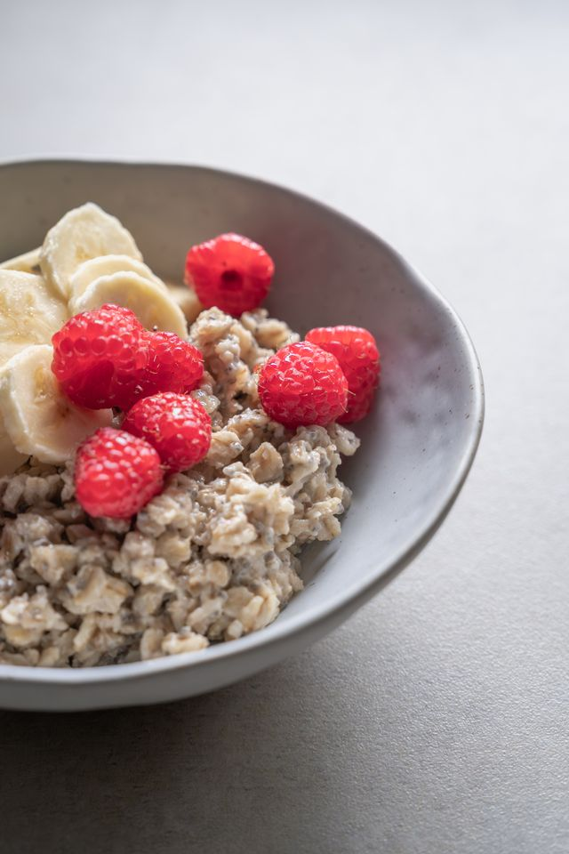

Description
This recipe shows how to make a warm, lovely oatmeal
Ingredients
- Oats
- Milk
- Take glass casserole dish, and put 8 half cups of oats.
- Pour in 4 cups of milk, and mix around a little
- Put the dish in the toaster oven, on bake, 350 °, for 30 minutes.
- Take it out and enjoy your warm, delicious oatmeal! Top with honey, maple syrup, cinnamon, peanut butter, or anything else you can think of . . . even cayanne pepper!